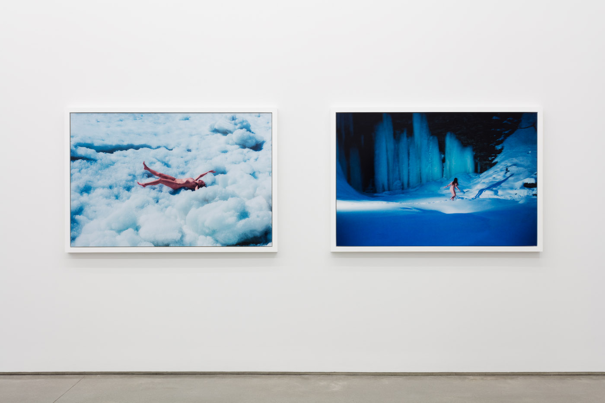

새로운 도전
1 / 4
Give Me Yesterday, Fondazione Prada, Milan, 2016
2 / 4

Winter, 83 Grand Street Gallery, NYC, 2015
3 / 4
Freize Art Fair, Statements (Solo Booth), 2013
4 / 4
Gerhard Richter's Colour Charts at Dominique Lévy
❮
❯